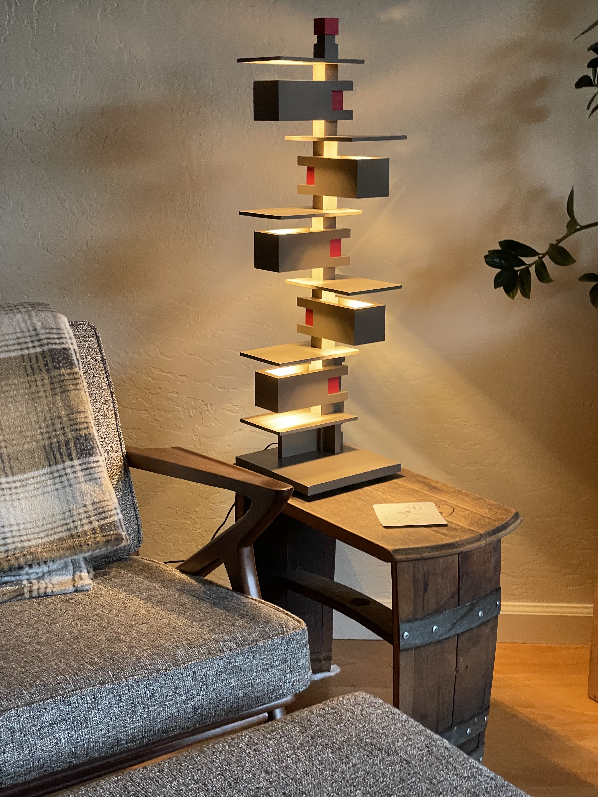

From the Workshop
Frank Lloyd Wright Taliesin Lamp
DoneMy reverse-engineered iconic FLW lamp, all 3D printed and with modern LED lights.

Placeholder paragraph one: what is this project, and what got you started on it?
Placeholder paragraph two: dig into the details — tools, process, and progress so far.
Placeholder paragraph three: what's next, and what you've learned along the way.
← Back to all projects